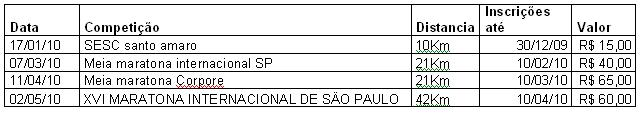
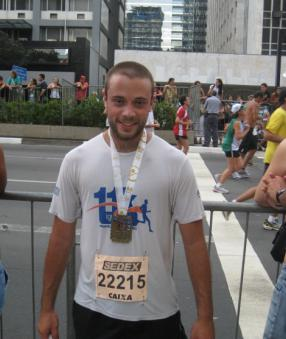

Cia. Ex-sedentário
vamo, vamo, vamo…
 Ontem fui treinar na parte da tarde na pista de Cooper do museu do Ipiranga, foram 15 voltas de 1km cada, fiz esses 15km em 01h e 15min, gostei muito do treino mas me senti um pouco fraco no final mas sem diminuir o ritmo, depois lembrei que só havia almoçado e fui correr as 18:30h de barriga vazia, bobeira minha depois no ônibus deu queda de pressão e por causa disso perdi o treino de hoje, como ontem fiquei fraco hoje resolvi descansar.
Ontem fui treinar na parte da tarde na pista de Cooper do museu do Ipiranga, foram 15 voltas de 1km cada, fiz esses 15km em 01h e 15min, gostei muito do treino mas me senti um pouco fraco no final mas sem diminuir o ritmo, depois lembrei que só havia almoçado e fui correr as 18:30h de barriga vazia, bobeira minha depois no ônibus deu queda de pressão e por causa disso perdi o treino de hoje, como ontem fiquei fraco hoje resolvi descansar.
Mudei os planos do treino longo, vendi a moto então fica inviável ir até a USP de trem, o treino longo será perto de casa mesmo porem fazer 20km lá vai ser mais difícil pois tem muita subia, sábado vejo o que consigo.
No dia 25-01 (aniversário de SP) irei participar do World Bike Tour SP, um evento intenacional de passeio ciclistico que quer estimular a pratica de exercicios físicos e a melhoria na qualidade de vida.
Fiz minha inscrição que alias foi uma odisséia internética … rsssssssss na virada do dia 31 de Dez. a 0:00h foram abertas as inscrições pelo site www.worldbiketour.net .
Eram 6000 vagas no evento e adivinhem …. em 37 minutos foram preenchidas.
Agora é so esperar o dia … e irei postar as fotos do evento …
Abraços
Segunda-feira: fiz um bom treino, 9km onde eu moro é bem puxado são muitas subidas e comecei a sentir a lombar.
Terça-feira: foi aqui no Museu do Ipiranga, foram 7km tranquilo.
Quarta-feira: (hoje) não fui treinar, estava sentindo mais dores na lombar e resolvi não correr, amanhã treino normalmente não quero forçar agora como os treinos estão sendo bem focado para maratona tenho que estar bem pra sábado onde é o principal treino, sábado vou fazer meus treinos logos, quero começar com 20km vamos ver se consigo.
Já ia esquecendo, meus treinos longos serão na USP 2 voltas de 10Km todos os sabados se alguem quiser aparecer por lá, quero chegar entre 07:00h e 08:00h, essa distancia vai durar uns 3 finais de semana e depois vou aumentando e diminuindo.
A Corpore disponibilizou um vídeo sobre a Samsung 10 que eu e o Claudio corremos. Achei legal e resolvi disponibilizar aqui…
Ontem a noite fiz o meu melhor treino. Fui correndo da casa da Ana até em casa fazendo um caminho direto, que pode ser visto no mapa (link abaixo). Saí 20:08 horas e cheguei às 21:32 horas. Foram 10 km de pura adrenalina. Sem mochila apenas com os cintos de hidratação, um para a água e outro para chaves, celular e RG. O caminho que fiz não tem subida, mas foi repleto de muita aventura, como, por exemplo, atravessar a ponte Atílio Fontana (de acesso à Anhanguera) em plena obra. De lembrança ganhei um pequeno rasgo na mão esquerda, o qual nem me lembro como aconteceu. Tudo precário, coração a mil, com medo de despencar no meio do rio Tietê ou na Marginal (o que seria fatal). Eu não consegui ver onde pisava com os faróis dos carros vindo na contramão. Eu não recomendo que façam o mesmo. Mas foi animal. Ah… isso foi sim. Um orgulho besta!
Passada a ponte, a chuva veio, e veio com tudo que tinha direito. Dificil era enchegar. Fui na marginal contrária da Anhanguera torcendo para achar logo uma passarela e chegar em lugar conhecido. Passarela gigante e chuva torrencial. Na Avenida do Anastácio a chuva me cegava e enchurrada na altura da canela, o que me exigia uma forcinha extra. Mas valente. Certos momentos eu tentava justificar o desempenho fantástico (para os meus padrões). Caramba, eu tinha escrito dois parágrafos super legais e os perdi, tenho de me disciplinar a escrever os posts no word, depois colar aqui.
Resumindo o que tinha escrito, parei de procurar desculpas. Eu curti o sucesso do meu desempenho. Fruto merecidíssimo de todo esforço que empreendi neste tempo todo. Fiquei orgulhoso com tudo. Com o percuso (muito legal), com o tempo, com as passadas, tanto no plano como nas subidas.
Quando cheguei no portão senti uma vontade enorme de gritar vitória. Mas contive com receio de que os vizinhos pudessem chamar o resgate do Pinel.
Já em casa eu tinha de fazer algo para compensar o esforço. Vinte minutos com gelo sobre as canelas, apenas para dizer obrigado pelo prazer que me proporcionaram e, principalmente, por não inflamarem ou se lesionarem.
Até agora estou meio passado. Uma sensação besta, gostosa, sei lá. Quem corre entende.
A seguir, o link para o mapinha:
http://www.mapmyrun.com/route/br/s%e3o%20paulo/939126276832737785
Depois do primeiro e delicioso LSD eu só caminhei na quarta-feira. Cinquenta minutos de caminhada, só para falar que me mantive ativo por algum tempo. Sete da manhã e já estava de caminhadinha feita e satisfeito.
31/12/2009 – Quinta-feira – Estou em Itanhaém. São 19:00 horas e está chovendo muito, mas saio para correr mesmo assim. Um vai de 3km, pelo aslfato e um vem, idem, pela praia. Uma delícia. Não marco o tempo, mas vou soprando bem, desenferrujando (ou tentando) as pernas do trote longo da terça-feira.
01/01/2010– Sexta-feira – 18:30 horas. Já não é mais tão engraçado pensar em treinar debaixo daquela chuvarada, menos ainda é calçar os tênis ainda encharcados da corrida da véspera. Mas lá vou. Faço umas flexões, uma dezena de pula-e-chinelo e ganho a rua. O mesmo vai e vem, só que tudo no asfalto, na contramão da Rodovia. QUE PERIGO?! Risos… Com o trânsito, os carros vinham a 10km por hora. Perigo nenhum. Muito pelo contrário. Estranhei ninguém ter feito gracinha com o gordo debaixo da chuva, na contramão do acostamento, já não estou mais causando espanto e estranheza (que chato). Não soprei tanto como na véspera, mas foi uma corridinha, ou seja, mais do que o trote de sempre. Me irritei só de pensar em repetir o ritual de sair na chuva mais um dia. Três dias seguidos não daria não.
Em tempo: esqueci de dizer que corri esses dois dias com um modelinho ridículo. O gordo simplesmente corria sem camisa e com a bermuda de ciclista. A coisa mais fofa de todo litoral sul, com certeza.
02/01/2010 – Sábado – Day Off – Está aí uma boa desculpa para a minha preguiça. (Voltei para São Paulo)
03/01/2010 – Domingo – Saí de casa 08:30, com toda a produção de Lento Forte. Parecia que daria a volta no globo terrestre, carregando tudo o que precisava. Tomei um ônibus até a frente do CEAGESP, de lá parto para o Villa Lobos num trotezinho safado, mas decidido a ser longo.
Que nada, com aquele sol de rachar, num horário que nunca treinei (10:00 horas), desisiti com 50 minutos. Tanta produção para nada. Foram 16 minutos até o Parque e o restante lá dentro.
Caminhei por mais 01H20Min até à casa da Ana. Fazendo o caminho Cerro Corá (inteirinha)/Heitor Penteado/Avenida Pompéia. Cheguei no destino com os músculos das pernas reclamando.
Saldo do Feriadão: P O S I T I V O. Muito bom!
 Ano passado, mas não tão distante anuncie aqui no blog que teria um desafio, ele já tem data marcada dia 02/05 nesse dia acontece a Maratona de São Paulo e junto com ela uma corrida de 25Km uma de 10Km e caminha de 3Km, então tem para todo gosto.
Ano passado, mas não tão distante anuncie aqui no blog que teria um desafio, ele já tem data marcada dia 02/05 nesse dia acontece a Maratona de São Paulo e junto com ela uma corrida de 25Km uma de 10Km e caminha de 3Km, então tem para todo gosto.
Ainda preciso falar do desafio?
Quero encarar os 42km mas se sentir difculdade nos treinos vou pros 25Km já montei uma planilha das competições que quero correr até lá e ainda tem os treinos que já esta tudo na cabeça e outro dia posto aqui.

Então ai vai Claudio, Alex e leitores do blog qual desafio vocês querem?
42Km?
25Km? — Claudião devidamente inscrito, com 4 meses de antecedência —
10Km?
3Km?
O desafio esta ai e não tem desculpas, pois temos exatamente cinco meses até esse dia.
 Fala pessoal, dia 31/12 foi um dia muito especial pra mim como todos já sabem foi o dia de correr a São Silvestre, acordei agitado e ansioso para o grande dia, meu joelho que gosta de brincar comigo começou a querer doer pensei que era psicológico porque dor no dia da corrida não seria justo ainda mais sem forçar nos treinos da ultima semana.
Fala pessoal, dia 31/12 foi um dia muito especial pra mim como todos já sabem foi o dia de correr a São Silvestre, acordei agitado e ansioso para o grande dia, meu joelho que gosta de brincar comigo começou a querer doer pensei que era psicológico porque dor no dia da corrida não seria justo ainda mais sem forçar nos treinos da ultima semana.
Cheguei à Avenida Paulista cedo eram umas 14:45h e já tinha muita movimentação, consegui um cantinho e me arrumei coloquei meu numero de peito, chip no pé e fui passear um pouco ver o povo fantasiado e a alegria de todos, aos poucos a avenida foi ficando tomada pelos corredores e eu me posicionei bem no meio, tinha uns 10.000 na minha frente e mais uns 10.000 pra trás, a Paula começou a sumir na multidão mas sempre tentando me acompanhar para registrar esse momento.
Deu a largada, minha vontade era de fazer em 01:15h mas era impossível, consegui impor meu ritmo de corrida depois do km6 muita gente na minha frente bem devagar, para não empurrar ninguém e sim fazer festa resolvi segurar e pensei a hora que der eu corro e no elevado foi que consegui impor meu ritmo mesmo assim tinha hora que tinha que diminuir, durante o percurso as pessoas vão gritando e aplaudindo sempre incentivando, as senhoras e crianças estendem os braços para bater em nossas mãos, é bom ir perto da calçada por isso vou comprimento e eles gritam “Feliz Ano Novo” depois dessa farra chega a brigadeiro, como não consegui impor um ritmo bom no começo sobrava um pouco mais de energia, me concentrei e fui subindo passando muita gente que já caminhava ou corria com muito esforço, quando olhei pra trás vi que um corredor me seguia vindo no meu ritmo depois de um tempo ele ficou para trás, uma pena estava sendo um grande incentivo, logo chegou a curva da brigadeiro o pessoal gritando muito e dando os parabéns, entro na paulista levanto a cabeça e abro a passada, comecei a procurar a Paula que bravamente me esperava no meio da galera para tirar uma foto, depois de posar pra foto em quanto corria dei mais um pique e cheguei com 01h 25min , a sensação é fantástica muita emoção, valeu muito a pena ano que vem estarei lá.
Gostaria de agradecer a todos que estiveram comigo e torceram para que desse tudo certo Paula, Claudio e Alex um grande abraço a todos.
Resultado:


Quero desejar uma grande e feliz São Silvestre ao amigo Thiago, incansável incentivador, que acredita e ama o ser humano de cada um, com tal espontaneidade, que fará toda a diferença na profissão de educador físico que está abraçando.
Um grande viva ao Alekão, idealizador do blog sem o qual eu ainda estaria zumbizando gordamente sem dormir por aí. Meu grande amigo a quem eu amo demais e que, por capricho da natureza (como diz a Ana), é também meu primo.
Consegui de volta o que eu achava impossível. Um sono reparador e a felicidade que só atividade física de nossa predileção pode proporcionar. Muita força pará nós e meu muito obrigado a todo mundo que nos leu e vibrou com cada conquista.
Termino este ano emocionado e pretendo começar o próximo com muita serenidade e prazer a cada pequeno novo passo dado adiante.
Ex-sendentários 2010!!!!
(Atenção: em 2011 mudaremos de nome por motivos, os quais esperamos se fazerem, óbvios)
Estou feliz e leve como depois de um mega show de Rock. Valeu a paciência, a dieta e o blog. Hoje fiz o meu primeiro LSD (Long Slow Distance) ao bom e velho estilo Lento Forte (codnome que usei alguns meses de 2007), todo carregado de penduricalhos, parecendo mais uma mula de cacau (com mochila, pochete de hidratação na cintura e mais outra na altura do peito presa as alças das mochila para o transporte do celular – bem à mão).
Foram duas horas e cinco minutos de trote cravado. O primeiro LSD de vários que pretendo realizar aumentando o tempo de duração, progressivamente, até o limite de três horas.
O treino já tinha sido pensado para ser de casa até a casa da Ana, minha irmã, que fica na Rua Tavares Bastos, quase atrás do Hospital São Camilo, na Pompéia.
Na noite de ontem gastei meia hora só arrumando a roupa de trabalho em sacos (para congelados) para não molhar, mas não tinha decidido sequer qual caminho eu faria.
Quatro e meia da manhã o telefone toca e pulo para debaixo do chuveiro. Chuva? Mudo a opção dos tênis, calço o asics, mais sujo e já testado e aprovado em temporais.
Surge a indecisão: caminho reto/curto com ritmo ou trote longo fazendo caminho mais longo? Fico tentado ao trote longo. Mas não comprei gel? Vai banana passa, mesmo.
Cinco da manhã já vou em direção ao portão, está chovendo mas estou muito animado. Pudera, sai tomando uma lata de red bull, que bem que poderia me dar um bote no lugar de azas (brincadeira, só chuviscava). Solto o cronômetro e caminho até a mutinga quando arrisco o início do trote uma alça da mochila se solta.
São 05:10, vou voltar. Voltei para casa e botei tudo dentro de uma mochila da Mari, da nike muito boa, aliás, uma delícia, eu já estava sentindo desconforto com a minha nas duas quadras que caminhei. Com a da Mari, fiz todo o percurso na boa.
Bem, parti no trotinho e chuvisco e estou muito animado já pensando no tempo de duas horas até o meu destino.
Mutinga, Raimundo até o Barrancão. A partir dali fiz o caminho dos ônibus até a Edgar Facó. Em cima da Ponte do Piqueri, decido comer uma banana desidratada. Erro grosseiro e imperdoável. Claro que nunca tinha lido que alguém tivesse comido isso em atividade. Tem de mastigar muito, não dá para respirar, horrível. Aprendi da pior forma. Nunca mais.
Ermano Marchetti lá vou eu. Na marquês de São Vicente há poças na calçada. E na avenida os poucos carros que ali vinham o faziam rente a calçada, o que me fazia ficar pulando de cá pra lá (calçada/rua e vice-e-versa)
Sempre na contramão fazendo, portanto, o maior tangenciamento possível. O bom de trotar é que nos faróis fica-se dando micro voltinhas, o que seria horrível de se fazer para quem estivesse em efetiva carreira.
Viaduto Pompéia, olho no cronômetro e só tinham se passado 01H20Min, quebro a esquerda ganhando a Franscisco Matarazzo, passo embaixo do Viaduto Antártica e subo a rua Airosa Galvão, duas quadras desta e viro a diereita pela Tanabi até o início da Sumaré. Nela trotei por cinco travessas até virar a esquerda na Rua Campevas. Dali virei na terceira a direita para pegar a Rua Vanderlei, cruzando a Apinagés até chegar à Aimberê. Esqueci de dizer que a ladeira da Rua Vanderlei era de chorar e a minha corrida estava mais na intenção do que no efeito. Mas segui nos movimentos que a copiam, cujos efeitos e o esforço não são nada parecidos com o de caminhada. Na Aimberê subi mais uma e virei na Caiowa até a Alfonso Bovero, a esquerda. Duas quadras nela e faço o retorninho da Cotoxó para ganhar a Tavares Bastos, duas quadras cruzando a Pompéia e correndo para o Abraço. Ou melhor para o Banho quente e o café da manhã que me aguardava na Ana. Um beijo na minha princesa e vim feliz da vida para o escritório.
Sobre o Long Slow Distance, ver matéria na contrarelógio no subtítulo: Corredores principiantes:
.jpg "DSC01707 (576x1024)")
.jpg "DSC01776 (1024x576)")
.jpg "DSC01821 (1024x576)")
.jpg "DSC01880 (1024x576)")
.jpg "DSC01929 (1024x576)")
.jpg "DSC01940 (576x1024)")
.jpg "DSCN5694 (1024x768)")


Nós somos 100 Juízo
Nós somos Baleias
Últimos comentários